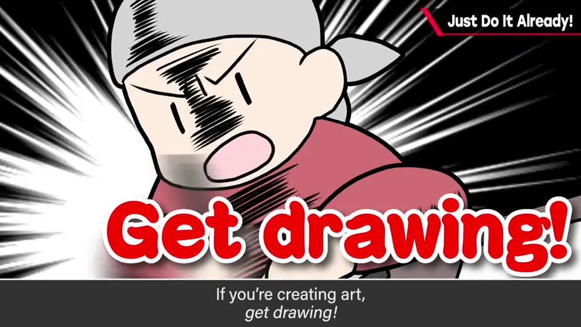
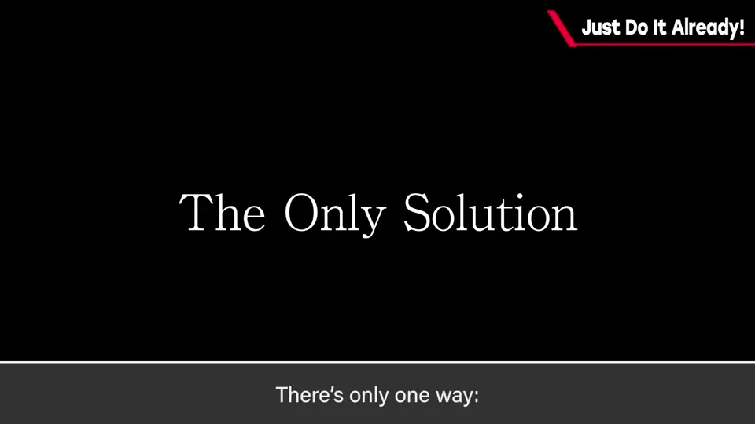
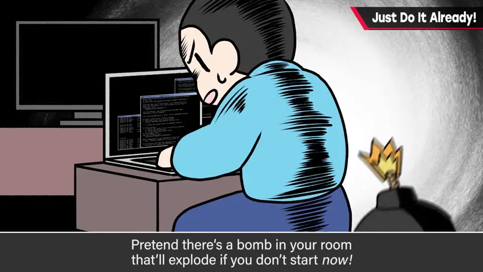
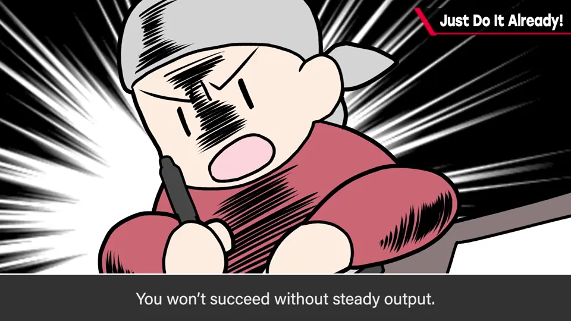

速览
面对该做的事没干劲，尤其从 0 到 1 的那一刻最难。樱井给出人人可用的唯一、最大的解决办法：总之，去做。要写就现在写，要画就一直画，要出门就马上收拾出门——就当「不马上做房间就会爆炸」。对提不起劲的事深想没有意义；动手，干劲会随后跟来。暂时远离 SNS、视频网站、游戏等诱惑；锻炼自己、接近成功靠的压倒性地是出手次数，意义以后再想。
1. 没干劲时，唯一最大的解决办法 0:00
面对该做的事却没干劲、迟迟无法起步——尤其是从 0 到 1 的那一刻，从毫无抓手的状态「点火」很难。樱井给出「人人可用的唯一、最大的解决办法」：
总之，去做。
- 要做计划、写东西，现在就写；要画画，就一直画；要出门，现在就收拾出门。
- 看这段视频的人，也马上关掉去动手——就当「不马上做房间就会爆炸」。


2. 动手，干劲会随后跟来 1:00

他说这是认真的：对提不起劲的事深想没有意义。
- 动手，干劲会随后跟来。
- 暂时远离 SNS、视频网站、网页、游戏等的诱惑。
- 锻炼自己、接近成功，靠的压倒性地是出手次数——输出少就没有成功。意义之类的以后再想。
- 把任务可视化等方法也有效，但可以动起来之后再想。
flowchart LR
A["没干劲 / 无从下手"] -->|"不要深想原因"| B["立刻动手
（关掉诱惑）"] B --> C["干劲随后出现"] C --> D["输出次数增加"] D --> E["成长 / 接近成功"]
（关掉诱惑）"] B --> C["干劲随后出现"] C --> D["输出次数增加"] D --> E["成长 / 接近成功"]

自测题
1. 樱井给出的「唯一、最大的解决办法」是什么？
总之，去做：要写就现在写，要画就一直画，要出门就马上收拾出门——就当不马上做房间就会爆炸。 0:25
2. 没干劲时，深想原因有用吗？
没有意义。总之动手，干劲会随后跟来。 1:04
3. 樱井认为锻炼自己、接近成功靠的是什么？
压倒性地靠出手次数——输出少就没有成功；意义之类的以后再想。 1:22